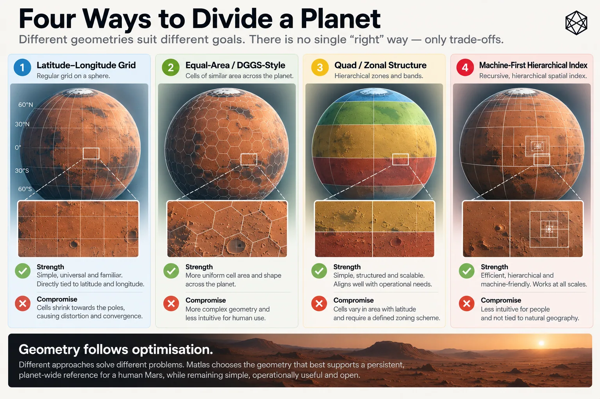
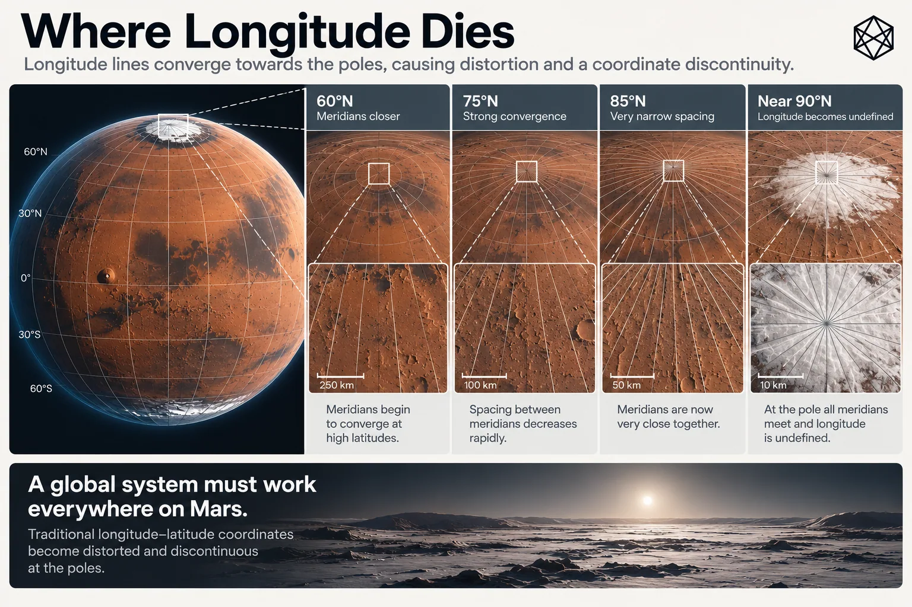

The Planet Is Round. The Grid Is Not.
Choosing Geometry for Human Mars
Once you decide to divide the whole of Mars into stable reference areas, geometry stops being background scenery and starts causing trouble.
The problem is easy to see and impossible to remove. Mars is roughly spherical, while most of the shapes humans find convenient are not. Rectangles sit beautifully on a page. Hexagons tile a plane with admirable efficiency. Latitude and longitude look wonderfully regular on many maps. Wrap any of them around a planet and some part of the elegance has to give.
There is no perfect planetary grid.
Every global spatial system protects some properties at the expense of others. A design can favour equal area, simple boundaries, good neighbourhood behaviour, familiar coordinates, computational efficiency or human legibility. It cannot maximise all of them at once. The useful question for Matlas is therefore much narrower: which compromises best fit the operating geography we have already designed on paper? That is a much easier question to answer.
Four broad choices

Read a description of this illustration
The comparison is between approaches optimized for different criteria, rather than an assertion that one grid has universally superior geometry.
The first option is to use no civil grid at all.
Latitude and longitude already locate every point on Mars. They are globally applicable, scientifically established and capable of whatever precision an application requires. A rover can navigate with coordinates. A geologist can record a sample with them. Engineers can survey a future construction site without translating every measurement into somebody else’s civil hierarchy. Most of those activities should continue doing exactly that.
The problem begins only when we want persistent areas as well as precise points.
Take latitude and longitude and divide them into repeated angular blocks and a very natural hierarchy appears. Large blocks can be subdivided into smaller ones. Every boundary can be expressed directly in the coordinate language already used to map the planet. Membership can be calculated rather than stored in a proprietary database, and a human who knows roughly where 30° north or 120° east lies has some intuitive purchase on the resulting geography.
For Matlas, those are unusually valuable properties. But an angular hierarchy is only one family of possible answers.
An equal-area system can keep surface units much more comparable in size. That is attractive for statistics, sampling and many forms of scientific analysis because the amount of ground represented by a cell does not quietly change as you move across the planet. The price is usually some loss of simple angular boundaries or straightforward human interpretation.
A Discrete Global Grid System, or DGGS, can provide hierarchical global cells with excellent analytical and computational properties. Some use polyhedral constructions or other techniques to distribute distortion more evenly around a sphere, making them powerful tools for multi-resolution data, spatial indexing and neighbourhood analysis. For those purposes, a good DGGS may be a substantially better tool than anything Matlas is trying to build.
At the far end sits the machine-first spatial index: a compact global identifier designed primarily for software. It may encode location, hierarchy and neighbourhood relationships brilliantly while telling a person almost nothing at a glance. If software always sits between the identifier and the human, that can be an entirely sensible design.
The choice is therefore not between clever and primitive geometry. It is between different optimisation targets.
What our brief actually values
The previous chapters have already made the choice easier. Matlas is not primarily a climate grid, a remote-sensing database or a machine navigation system. It is intended as a thin civil reference layer that sits close to scientific measurement, can persist for generations and remains intelligible to both people and machines.
That gives several properties unusual weight.
The first is angular legibility. There is value in keeping civil boundaries close to the language of latitude and longitude already used beneath them. If a major boundary follows an ordinary latitude or longitude, its relationship to measured Mars is immediately visible. Independent software can reconstruct it directly, and a reasonably informed person can understand approximately where the area lies without first decoding a specialised planetary index.
The second is a small number of meaningful scales. Chapter 7 deliberately rejected the idea that a good hierarchy needs dozens of mathematically regular resolutions. We need enough levels to support distinct operating questions, not every subdivision a recursive algorithm can produce. The hierarchy is therefore partly a human structure, not merely a computational one.
The third is persistence through transparent rules. A sophisticated DGGS can be every bit as deterministic as a simple angular grid, but simple boundaries have an additional virtue when infrastructure is expected to survive generations: they are easier to inspect, explain and independently reconstruct.
For foundational systems, boring has advantages.
The fourth is operationally recognisable scale. If one level is supposed to function as a regional area and another as a local civil area, the units do not have to be identical in size, but they cannot vary without limit while pretending to mean the same sort of thing.
That last requirement is where Mars begins to object.
Longitude does not stay the same size
Latitude and longitude look beautifully symmetrical when written as two numbers. Physically, they are not.
Move one degree north or south and the distance remains broadly comparable as you travel around the planet. Move one degree east or west and the distance depends strongly on latitude, because the circle around Mars becomes smaller as you approach a pole. To a good approximation, east–west width scales with the cosine of latitude.
At the equator, one degree of longitude has its maximum width. At 60° latitude, it has roughly half. By 72°, less than a third remains. At 80°, the width is below one fifth of its equatorial value. At the pole, every longitude meets.
This is harmless if longitude is simply measuring angular position. It becomes awkward when we turn the angles into civil areas.
Imagine a cell with fixed latitude and longitude dimensions. Near the equator it may form a reasonably proportioned patch of ground. Move the same angular cell north and its north–south dimension stays broadly similar while its east–west width contracts. The box becomes a strip; move farther north and the strip gets thinner. Continue far enough and the entire structure becomes a collection of narrowing wedges converging on one point.
There is nothing mathematically wrong with any of this. The coordinates remain valid. Membership can still be calculated perfectly. A computer will not become distressed because one cell has acquired an unfortunate aspect ratio.
Civil geography has another concern.
If the same level of the hierarchy is supposed to represent roughly comparable operating areas, the meaning of that level begins to weaken as its physical shape changes dramatically. A regional unit should remain recognisably regional. A kilometre-scale unit should not gradually turn into a long thin ribbon merely because the rule refuses to notice latitude. That is the point at which geometric simplicity starts costing operational simplicity.
Flat maps can disguise this extremely well. A cylindrical projection may draw longitude lines as parallel vertical strokes from bottom to top, leaving high-latitude cells looking reassuringly similar to their equatorial cousins. That is the map doing its job, not the planet changing shape. Greenland has enjoyed several centuries of excellent cartographic publicity from the same phenomenon on Earth.
A global operating geography cannot afford to confuse the projection with the surface.
Why not optimise for equal area?
The obvious reaction is to abandon angular subdivision and choose geometry that keeps surface areas comparable everywhere. For some systems, that is exactly the right decision.
For Matlas, I think it optimises the wrong property.
Exact equality of area is useful, particularly for statistical analysis, but it was never one of the ten requirements. Direct relation to recognised coordinates, understandable hierarchy, persistence, reproducibility and operational scale all matter alongside it. So the standard we need is not equal area. It is adequate physical behaviour.
A unit at one latitude can be somewhat larger or smaller than its counterpart elsewhere. The system does not fail because two civil areas contain different numbers of square kilometres. Earth manages that trick routinely. The problem appears when the variation becomes large enough that the supposed scale no longer behaves like itself.
That distinction gives us permission to accept imperfection where perfection would cost too much elsewhere. The same reasoning applies to cell shape. A beautifully regular hexagon or mathematically elegant polyhedral cell is not automatically superior to a slightly distorted angular quadrilateral if the latter can be understood immediately from coordinates and remains perfectly usable on the ground.
Geometry has to be good enough for the job. It does not have to win a beauty contest.
The uncomfortable choice: rule or result?
The poles expose the design decision rather neatly.
We can preserve one angular rule everywhere: divide longitude the same way from equator to pole. The specification becomes wonderfully simple, but the physical result becomes progressively worse.
Or we can allow the rule to change with latitude. As the circumference shrinks, neighbouring longitude slices can be combined. Farther poleward, the east–west branching can reduce again. The areas remain angularly defined, but the number of divisions adapts so that their physical widths do not collapse at the same rate.
We have then sacrificed uniformity of rule in order to preserve more uniformity of operating effect.
For Matlas, that is the better trade.
It follows the same design philosophy established earlier: complexity has to earn its place. There is no reason to build elaborate global geometry where a simple angular hierarchy works perfectly well. But neither is there much virtue in preserving a simple rule after the planet has made its result absurd.
So the emerging bias is straightforward:
simple where possible; adaptive where necessary.
The adaptation can remain deterministic. The transition points and subdivision rules can be specified in advance, allowing independent implementations to derive the same answer from the same coordinates. Nothing needs to be improvised locally.
That tells us the likely direction. It does not yet solve the pole.
Where longitude stops helping

Read a description of this illustration
Lines of longitude converge at the geographic poles. If equal angular subdivisions are carried unchanged poleward, their east–west physical width contracts. MGRID addresses this above 72 degrees latitude with a separate P1 branching rule.
Eventually, narrowing is no longer the only problem.
At exactly 90° north or south, every meridian meets. Longitude ceases to distinguish physically different positions because all longitudes describe the same point. That creates a wonderfully small and irritating edge case: a global hierarchy built partly from longitude must decide who owns the apex.
Every wedge approaching the pole may be perfectly distinct immediately below it, but at the final point all their longitudinal boundaries converge. The ordinary east–west logic no longer has anywhere to go. For a local map, this can be treated as an oddity. For a system claiming deterministic coverage of the entire planet, it cannot.
The problem is almost comically tiny in physical area and rather large in architectural principle.
If every point on Mars receives one spatial identity, the pole receives one too.
This is where the geometry stops being a matter of drawing increasingly narrow rectangles and becomes a question of topology. The simple rule has reached the place where one of its dimensions effectively disappears. The detailed answer belongs later, with the polar architecture itself.
For now, it is enough to know that there must be one.
What we have chosen
Part II began with no commitment to a grid at all. We established a founding Mars, the jobs geography needs to perform and the ten requirements those jobs imply. We tested the systems Mars already has and found no broken geography waiting to be replaced — only a narrow missing layer worth considering.
Then we began designing that layer. It should cover the whole planet, remain a common reference rather than a territorial claim, and contain several useful scales rather than one flat resolution. Now we also know the kind of geometry those choices favour.
Through most of Mars, an angular hierarchy gives us something unusually valuable: civil geography that remains close to scientific coordinates, is easy to reconstruct, supports deterministic containment and can still be understood by humans without specialist spatial software. Perfect equality of area is not worth giving those properties up.
But the planet places a limit on the simple version. Longitude converges. Fixed angular cells narrow. Eventually the physical behaviour becomes poor enough that preserving the same rule would undermine the scale the rule was supposed to create.
So we need adaptation — not everywhere, only where Mars forces it. At the very top and bottom of the planet, even adaptation runs into the point where longitude itself collapses.
That is the tension on which Part II should end. We want the legibility of angular geography and the physical usefulness of reasonably proportioned areas. For most of Mars, we can have both. Near the poles, the simple rule stops giving them to us.
So what did we build?